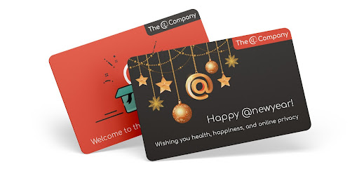

The @ Company Update - November 2020
I hope this holiday season finds you and your family well!
At The @ Company we have been very busy working with developers and working on the customer experience for the first apps. Here are the highlights:
Gift Cards - As the holidays kicked off with Thanksgiving in the US we decided to launch a gift card campaign - Give the gift of privacy. Here are the instructions that we are using to promote the gift cards, we would love for you to participate. :-)
App status - We launched the @persona and @mosphere apps which are now available in both the App Store and the Play Store. In all honesty, being the first applications on a new protocol, we were not happy with the effort that it took for the customer to pair multiple apps with their @sign, so we are working on that process. (Here is a brief summary of actions to activate your @sign with @persona.) @buzz is in the Play Store and will soon be in the App Store as well. Once you have @buzz running @tmosphere picks up your contacts automatically!
All three apps are 1.0 versions and we already have a long list of improvements (both in usability and functionality) that we are working on for our apps (@persona & @mosphere) and that Renascence is working on for their @buzz app. If you get a chance to try the apps, be sure to send us your list of suggestions through support@atsign.com.
The @votes app created by one of our former Bermudian interns is going into beta next month. Please let us know if you would like to try that one out.
The @location app has been renamed to @rrvie and is currently in design with the GeekyAnts. We are currently tracking over 20 @pps in various stages of development.
Flutter Vikings - There was a Nordic Futter Developer conference called Flutter Vikings that we participated in. @kevin and @colin had a chance to mention the @protocol to over 450 developers in attendance. We held a contest for ideas using the @protocol and within just a few days 3 developers had working code!
Fundraising for Series A is moving along, thank you to those who have already participated! We are now engaging with Silicon Valley VCs.
And now for the tech deep dive:
@Operations
As we launched we started thinking about how we can provide an operational view of the @protocol infrastructure along with the websites to our customers. Keeping it really simple we produced the status.atsign.com website which provides a small subset of the things we monitor behind the scenes. We are obviously aiming for 100% uptime everyday but on November 24th we did have some downtime due to an error made by one of our tech providers CloudFlare. This was quickly highlighted, within a minute by our monitoring systems and we fixed the problem immediately. That oustage does show up on the status website charts on the @secondaries line.
We have also had a small number of customer service queries and application issues reported to us. Most of these issues have been with activation of the second @application which currently is very secure but cumbersome, we are working on that experience but also get people unstuck very quickly normally.
@ Core Protocol
Before we launched the company, we had a new feature to add to the @protocol which gives each secondary its own set of cryptographic keys. These keys are used to sign the ‘pol’ challenge, not only is this a leap in security but it is also the mechanism to discover if an @sign has been recreated or perhaps been sold to another owner. I am really pleased to say that this code was completed and tested just days before we went live and it has been working very well.
That code along with all the @protocol code is now OpenSource and in a public repo on GitHub https://github.com/atsign-foundation. All the libraries of the SDK are also available now on the pub.dev website, this is a huge leap and enables Dart/Flutter developers from around the world to look at our code and start using it in their applications very easily. The Virtual Developer Environment (VDE) with the feedback from the @dev community is much simpler to use and also in the public domain via dockerhub.com.
Much of the focus at the start of November was on fixing new bugs and improving performance on the SDK code. Some of those improvements have been amazing, reducing most updates to the speed of memory on the device and with the synchronization to and from the cloud happening in the background.
Towards the end of the month we have got back into regular sprint planning and focused on new features of the protocol one we are looking forward to is cryptographic signatures of data including shared public data. This will allow public and private data to be signed by the owner so that it is provably true (from a legal ownership point of view) that they created that content and no one else.
Wishing you all a great holiday season with your family and friends whether virtual or in person.
Stay safe and healthy!